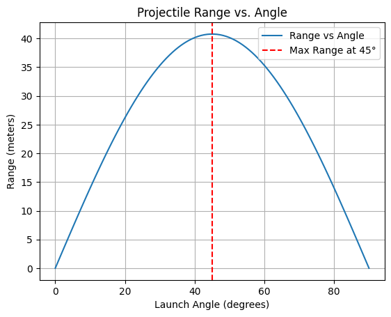
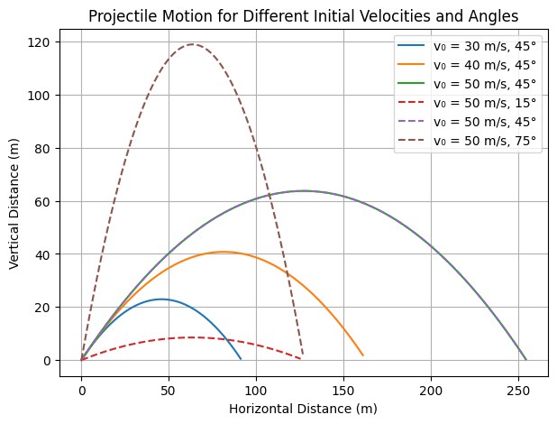

Problem 1
Mechanics Problem 1: Investigating the Range as a Function of the Angle of Projection
1. Introduction and Motivation
Projectile motion is one of the most fundamental topics in mechanics, with applications in sports, ballistics, space exploration, and engineering. Understanding how the range of a projectile varies with its launch angle is crucial in many real-world scenarios:
- Sports Science: Optimizing a soccer player's free-kick or a basketball shot.
- Military and Ballistics: Calculating the range of a projectile in different terrains.
- Space Science: Predicting the trajectory of spacecraft launched from different planets.
- Engineering: Designing water fountains or roller coasters with precise parabolic arcs.
In this study, we investigate how the range of a projectile depends on the launch angle and explore factors that influence projectile motion.
2. Theoretical Foundation
Newton’s Second Law
Newton’s second law states that the force acting on an object is equal to the product of its mass and acceleration:
For a projectile in free fall under Earth's gravitational field, the only force acting on it is gravity:
Since acceleration is the second derivative of position with respect to time, Newton’s second law can be written as:
Dividing by mass:
This equation shows that the object experiences constant downward acceleration due to gravity while moving freely in space.
3. Equations of Motion
Projectile motion consists of two independent components:
- Horizontal Motion (\(x\)-direction):
-
No force acts in the horizontal direction, so acceleration is zero.
\[ \frac{d^2 x}{dt^2} = 0 \] -
The horizontal velocity remains constant:
\[ v_x = v_0 \cos\theta \] -
The horizontal position as a function of time:
\[ x(t) = v_0 \cos\theta \cdot t \] -
Vertical Motion (\(y\)-direction):
-
Gravity is the only force acting, so acceleration is:
\[ \frac{d^2 y}{dt^2} = -g \] -
The vertical velocity changes over time:
\[ v_y = v_0 \sin\theta - gt \] -
The vertical position equation:
\[ y(t) = h + v_0 \sin\theta \cdot t - \frac{1}{2} g t^2 \]
4. Time of Flight
The total time the projectile spends in the air is obtained by solving for \(T\) when the projectile lands (\(y(T) = 0\)):
Solving for \(T\) using the quadratic formula:
This equation gives the total duration the projectile remains airborne.
5. Range Equation
The range (\(R\)) is the total horizontal distance traveled:
Substituting \(T\):
For flat ground (\(h = 0\)), the well-known formula simplifies to:
This equation tells us that the maximum range occurs at \(\theta = 45^\circ\), assuming no air resistance.
Python Visualization:
Collab Visualization: https://colab.research.google.com/drive/1OJ9PvOWkqUUzbr23i4xrCo_lYyVzG-4J

Projectile Range vs. Launch Angle
Introduction
The plot represents the relationship between the range of a projectile and its launch angle in a uniform gravitational field, assuming no air resistance. It shows how the horizontal displacement of a projectile changes with different launch angles.
Understanding the Axes
- X-axis (
Launch Angle (degrees)): Represents the angle at which the projectile is launched, ranging from0°to90°. - Y-axis (
Range (meters)): Represents the horizontal distance (range) the projectile travels before hitting the ground.
Key Observations from the Graph
- The curve is symmetric about
45°, meaning that launching a projectile at an angleθgives the same range as launching at90° - θ. For example,30°and60°provide the same range. - The maximum range occurs at
45°, which is highlighted by the red dashed vertical line. - As the launch angle increases from
0°to45°, the range increases. - Beyond
45°, the range decreases, reaching0again at90°.
Physics Behind the Graph
The range R of a projectile launched with initial velocity v₀ at angle θ is given by:
$ R = \frac{v₀^2 \sin(2θ)}{g} $
where:
- v₀ is the initial velocity,
- g is the acceleration due to gravity (9.81 m/s² on Earth),
- θ is the launch angle.
Why is Maximum Range at 45°?
- The range formula contains
sin(2θ), which reaches its maximum when2θ = 90°, i.e.,θ = 45°. - At
45°, the horizontal and vertical components of velocity are equal, maximizing the distance covered before the projectile lands.
Legend Explanation
- Blue Curve: "Range vs Angle" - This shows how the range varies with launch angle.
- Red Dashed Line at
45°: "Max Range at 45°" - Highlights the optimal angle for achieving the longest range.
Conclusion
This plot illustrates the fundamental principle of projectile motion: the launch angle of 45° provides the maximum range in an idealized environment. The symmetry of the curve reflects the trade-off between vertical and horizontal components of velocity as the angle changes.
Collab Visualization: https://colab.research.google.com/drive/1pjSAtyFPm4nVpRGA02_JjOp854q0Tnnk

Projectile Motion for Different Initial Velocities and Angles
Introduction
This graph illustrates the trajectory of projectiles launched at different initial velocities (v₀) and launch angles (θ). The trajectories follow parabolic paths, which is a fundamental characteristic of motion under uniform gravitational acceleration.
Understanding the Axes
- X-axis (
Horizontal Distance (m)): Represents the horizontal displacement of the projectile. - Y-axis (
Vertical Distance (m)): Represents the height of the projectile at different points in its trajectory.
Legend Explanation
The legend on the right specifies different launch conditions:
- Solid Lines represent projectiles launched at θ = 45° with different initial velocities (30 m/s, 40 m/s, 50 m/s).
- Dashed Lines indicate projectiles launched at different angles (15° and 75°) but with the same initial velocity (50 m/s).
Each curve represents the path taken by a projectile under a given launch condition.
Key Observations
- Effect of Increasing Initial Velocity (
v₀) at45°: - The blue, orange, and green curves correspond to increasing values of
v₀ = 30, 40, 50 m/s, respectively. - As
v₀increases, both maximum height and range increase. -
The projectile with
v₀ = 50 m/s(green) covers the greatest horizontal distance. -
Effect of Different Launch Angles at
v₀ = 50 m/s: - The red dashed curve (
15°) has a lower trajectory and a shorter range due to its low vertical component. - The brown dashed curve (
75°) has a much higher peak but a shorter horizontal range, as more energy is directed into vertical motion. - The green solid curve (
45°) has the maximum range, confirming that45°is the optimal angle for distance in ideal projectile motion.
Physics Behind the Graph
The motion follows the kinematic equations:
Equations of Motion
- Horizontal Position: $ x = v_0 \cos(\theta) t $
- Determines how far the projectile moves in the horizontal direction.
-
The horizontal velocity remains constant (assuming no air resistance).
-
Vertical Position: $ y = v_0 \sin(\theta) t - \frac{1}{2} g t^2 $
-
The projectile first rises, slows down due to gravity, and then falls back to the ground.
-
Time of Flight: $ T = \frac{2 v_0 \sin(\theta)}{g} $
-
Higher launch angles result in longer flight times.
-
Range: $ R = \frac{v_0^2 \sin(2\theta)}{g} $
-
Ris maximized atθ = 45°in the absence of air resistance. -
Maximum Height: $ H = \frac{(v_0 \sin(\theta))^2}{2g} $
- Larger
θresults in a higher peak.
Conclusion
- The optimal launch angle for maximum range is
45°. - Increasing initial velocity (
v₀) increases both range and height. - Lower angles (
15°) result in a flatter trajectory with less height. - Higher angles (
75°) yield greater height but shorter range. - The trajectories are parabolic, as expected for projectile motion under uniform gravity.
This plot effectively demonstrates the effect of velocity and angle on projectile motion.